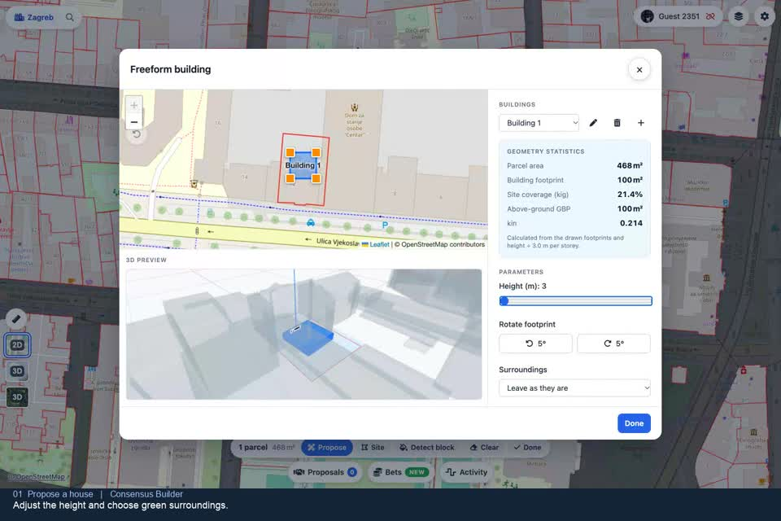
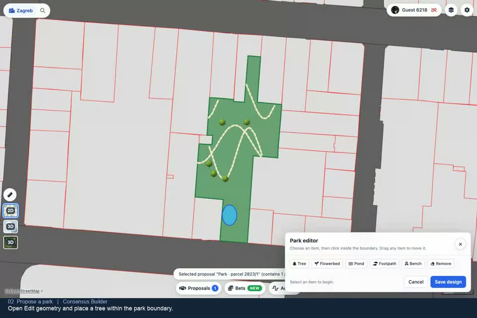
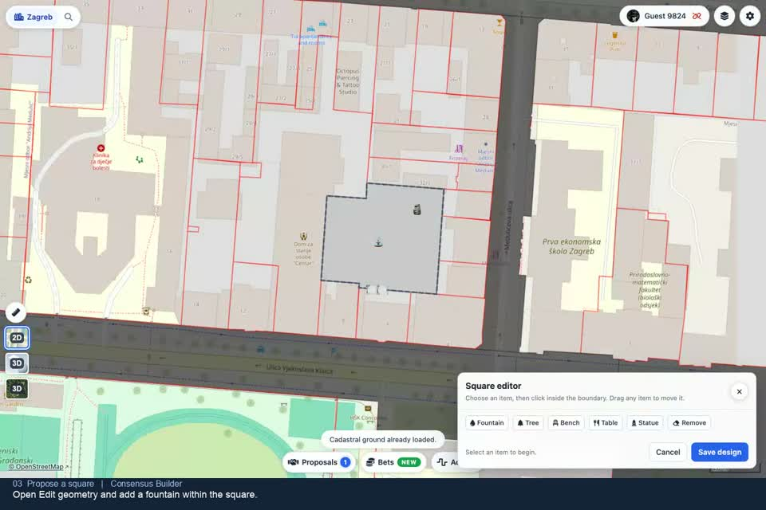
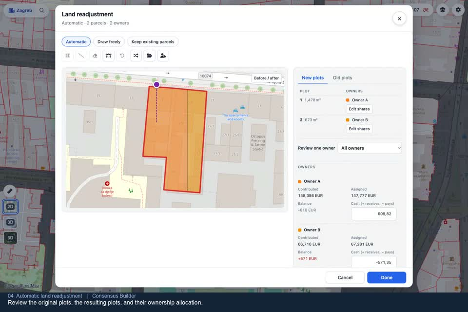
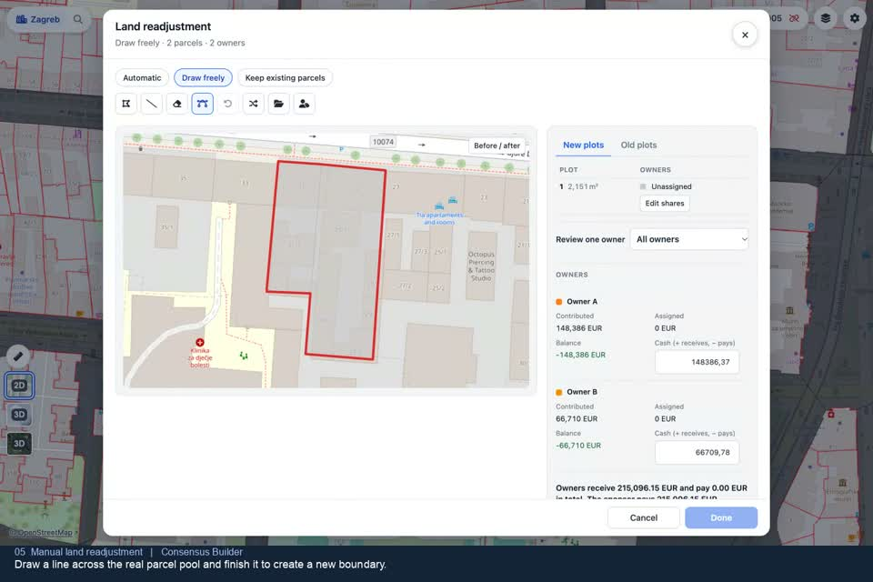
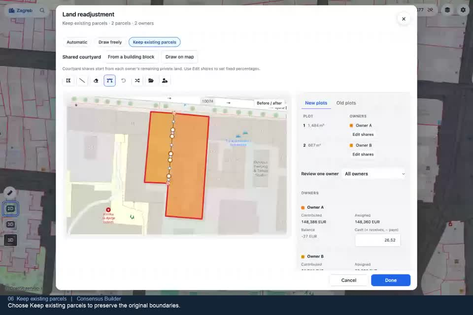
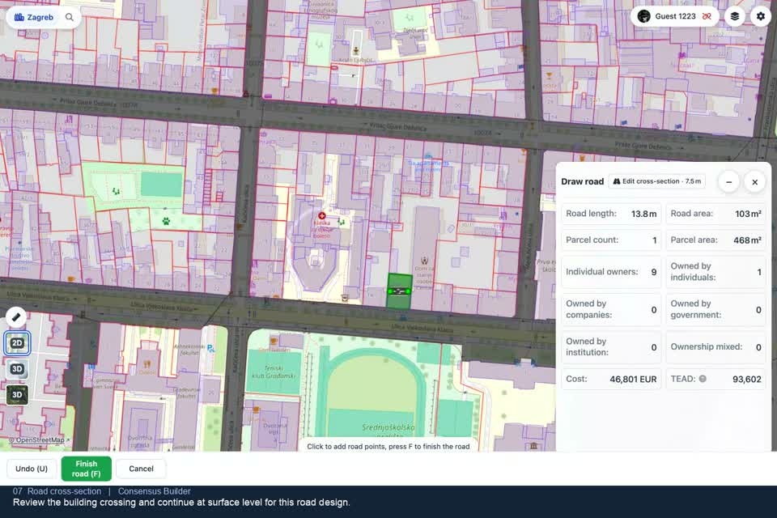
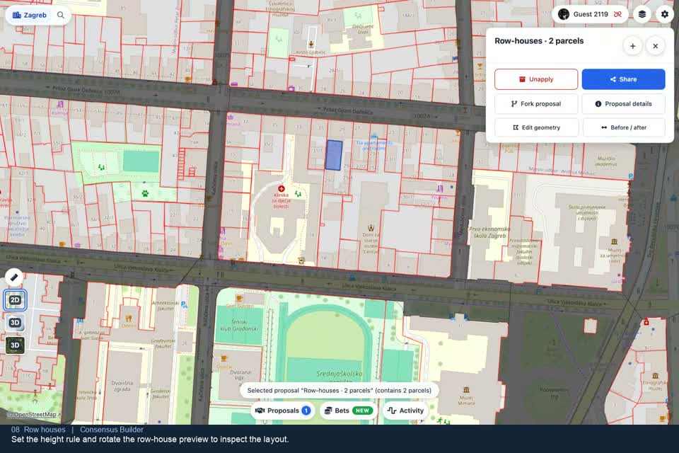
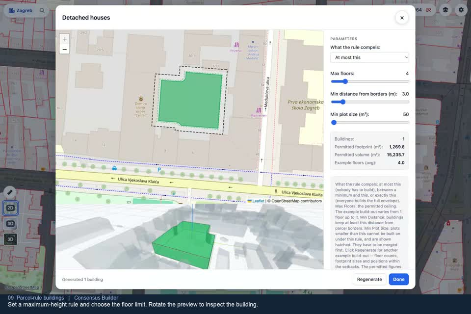

Draw the change. Explore it together.
Design on real land, inspect the result in 2D and 3D, compare alternatives and share a proposal or a whole plan. Start with a short video or follow the written steps.
Open the map
Watch, then try it
Nine short demonstrations of the current app. Each opens the matching walkthrough; use the player’s fullscreen button to read the controls.

0:34Design a house
Reshape the footprint, set its height and choose the surroundings.

0:37Create a park
Place trees, paths and ponds, then inspect the result in 3D.

0:33Create a square
Add a fountain and arrange the furniture on the map.

0:31Automatic readjustment
Rotate the division lines and review the new plots and owners.

0:31Draw plots freely
Draw and split plots, assign owners and compare before and after.

0:31Keep existing parcels
Start with the original boundaries and edit them with nodes.

0:42Design a road section
Draw an alignment, assemble the lanes and review the road in 3D.

0:32Design row houses
Adjust the row, reshape its footprint and check it in context.

0:39Set parcel building rules
Choose what the rule compels and distinguish the envelope from an example.
Start with a parcel or a site
-
Choose the land
Click a parcel and choose Propose here . For several parcels, choose Select more , click the others, then Propose in the selection tray. Detect block grows the selection to the surrounding block.
-
Or draw a site
Use Use as site to start from a parcel outline, or Draw a site here on open ground. A site is an editable boundary for a design. Where parcel data is unavailable you can still explore a proposal; missing data does not establish ownership.
-
Build and finish
Choose a tool in Build . Buildings and readjustment open a designer; parks, squares and lakes start in one click. Finish the designer with Done . In the direct build flow, a local proposal is created and applied to the map. If you opened the proposal form, finish its design and submit that form.
If a conflict prevents application, the app explains why and keeps the object parked in your proposals list. Open it there to review the reason and apply it when the conflict is resolved.
Choose the tool for the change
| Tool | Use it for | Walkthrough |
|---|---|---|
| Freeform building | Draw and reshape individual footprints. Set height and green or paved surroundings. | House walkthrough |
| Block / Row houses / Detached | Set a building rule, its limits and minimum plot size. Inspect an example build-out. | Buildings |
| Park / Square / Lake | Create public space, then place its furniture on the map. | Parks, squares and lakes |
| Land readjustment | Divide automatically, draw freely or keep the existing parcels. Review owners and cash. | Land readjustment |
| Road / Track | Draw a corridor and compose its cross-section from lanes. | Roads and tracks |
| Offer | Propose purchase or ownership terms without adding a physical object. |
Review, revise and build consent
Click an object to open its action panel. Proposal details holds the design, land, ownership and approval information. Unapply removes the proposal from the current map composition while keeping its record.
Use Fork proposal to revise the design or terms in an editable copy: the source stays unchanged. Edit geometry takes you straight to the relevant designer. Review the resulting version and its approval requirements before sharing it.
Ownership, approval and terms
In the fork’s proposal editor, use Approval to review the ownership data, approval source and policy for the selected land. Use Terms for the offer, conditions, expiry and deposit. The app reports incomplete ownership data instead of treating it as consent.
Changing ownership or approval creates a replacement proposal. Acceptances of the source do not carry over: review the new version and its required approvals.
Compare alternatives
Use Before / after in proposal details or a designer and drag the divider across the same map. For two alternatives on one parcel, open Proposals , tick two proposals and click Compare . The comparison shows the land take, buildings, plots, ownership, consent and support for that parcel.
Share a proposal or a plan
Share in the object panel creates a link to one proposal. To share a composition, apply the proposals you want, then choose Share entire plan . The plan preserves the applied set and its dependencies.
Local work is stored in this browser. Sharing uploads the records needed by the link; on-chain publication is a separate action. The app may ask for a public profile name when you share or publish.